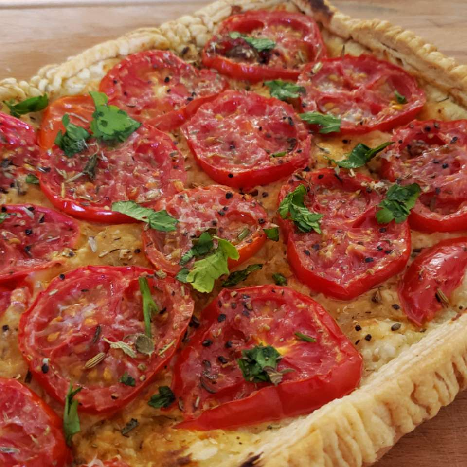

Back to Index
Chef John's Tomato Tart

Description
Ingredients
- 1 sheet frozen puff pastry, thawed and cut into quarters
- 2 ½ tablespoons Dijon mustard
- 1 large ripe tomato, sliced into 1/4-inch rounds
- salt and freshly ground black pepper to taste
- 3 pinches herbes de Provence
- 1 tablespoon freshly grated Parmigiano-Reggiano cheese
- 2 tablespoons extra-virgin olive oil, divided
- 1 pinch chopped fresh oregano
- 1 pinch chopped fresh parsley
- 1 pinch chopped fresh thyme
Steps
- Preheat the oven to 400 degrees F (200 degrees C).
- Place 2 pieces of puff pastry onto a silicone-lined baking sheet. Press the short seam of 1 piece onto the other to form the rectangular base of the tart. Cut seams off the other 2 pieces of puff pastry and press them into the edges of the base to act as the border.
- Freeze dough until firm, about 10 minutes.
- Score border with a knife, making shallow cuts 1/4-inch apart. Press the bottom of a fork onto the seam in the middle and poke holes all over the base.
- Bake tart shell until lightly golden and partially puffed, about 10 minutes. Press down on the base using the bottom of a fork. Avoid pressing border. Let cool for 10 minutes.
- Spread mustard over the inside of the tart. Arrange tomato slices into a single layer on top and cut a few slices in half to fill in the gaps. Season with salt and pepper. Generously sprinkle herbes de Provence on top. Add Parmigiano-Reggiano cheese and drizzle most of the olive oil on top.
- Bake in the preheated oven until pastry is well browned and crispy, 25 to 30 minutes. Cool to room temperature on the baking sheet or transfer to a wire rack using 2 spatulas. Drizzle remaining olive oil over the tart and sprinkle fresh oregano, parsley, and thyme on top.